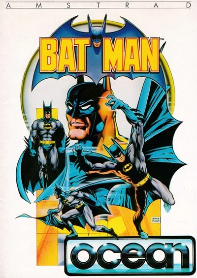

Amstrad CPC
Batman
- Año: 1986
- Desarrollador: Ocean (Jon Ritman y Bernie Drummond)
- Género: Aventura / Isométrica
- Jugadores: 1 jugador
Robin ha sido secuestrado y Batman tiene que rescatarlo. Para ello debe encontrar las siete piezas del Batcraft, un aerodeslizador, repartidas por las salas de la Batcueva, vistas en perspectiva isométrica.
Al principio Batman no puede ni saltar: primero tiene que encontrar su equipo. Las botas le dejan saltar, la bolsa le permite llevar objetos, el propulsor le deja moverse mientras cae y el cinturón hace que caiga más despacio. Por el camino hay enemigos, trampas y salas que son pequeños rompecabezas.
Es uno de los primeros juegos de Jon Ritman y Bernie Drummond, que después harían Head Over Heels.
Controles
Con el ajuste de teclas de este juego (algunos botones pulsan teclas del Amstrad). Al empezar pregunta «INFINITE LIVES (y/n)»: X = sí, A = no. En el menú, el joystick mueve el cursor y 1P elige; en «SELECT THE KEYS» elige joystick. Al principio Batman no puede saltar ni coger cosas: necesita encontrar las botas y la bolsa.
| Panel | Juego |
|---|---|
 | Mover a Batman · mover el cursor del menú |
 | Saltar · coger y soltar |
 | ESPACIO |
 | Abrir el teclado virtual (tecla F9). Pulsa Coin para activar el puntero; el joystick lo mueve y B pulsa la tecla |
 | Tecla «y» (vidas infinitas: sí) |
 | ENTER: elegir en el menú |
 + +  | Salir del juego |
El panel en Amstrad CPC

Argumento
Recopilado de internet (2026-11-02).
Robin ha sido capturado por los enemigos de Batman: sobre todo el Joker, con la astuta ayuda de Riddler (el Acertijo). La única esperanza de rescatarlo es montar el fiel Batcraft, el aerodeslizador de Batman, cuyas piezas están repartidas por las catacombas mortales que hay bajo la Batcueva, debajo de Gotham City.
El Joker y Riddler no aparecen en persona, porque Batman los conoce demasiado bien: en su lugar le lanzan una serie de secuaces desconocidos y trampas que pondrán a prueba su habilidad y su ingenio.
Final: con las 7 piezas del Batcraft, Batman tiene que encontrar la plataforma de lanzamiento, subirse al Batcraft, arrancar los motores y salir a rescatar a Robin.
Jugabilidad
Recopilado de internet (2026-11-02). Lo marcado con ⚠️ no está probado en la bartop.
- Versión de la bartop: Amstrad CPC, en disco (versión del Reino Unido). Juego de Ocean (1986), de Jon Ritman y Bernie Drummond, los autores de Head Over Heels.
- Tipo de juego: aventura de acción en 3D isométrico, con unas 150 habitaciones (catacumbas) y puzles de plataformas.
- Primero, el equipo: Batman baja a su guarida por la barra (Batpole), pero antes de buscar las piezas tiene que recoger su equipo. Sin él no puede empezar la búsqueda: al principio no puede saltar ni coger cosas.
- Después, el Batcraft: reunir las 7 piezas y llevarlas a la plataforma de lanzamiento.
- Objetos de Riddler: por las catacumbas hay objetos desconocidos; unos hacen falta para la misión y otros son mortales. Hay que deducir cuáles coger.
- Muertes: tocar a un enemigo cuesta una vida; en algunas habitaciones, también tocar los bordes.
- Batpiedras (Batstones): puntos de guardado; si pierdes todas las vidas, vuelves a la última que recogiste.
Fuentes
instrucciones originales (en la descripción del longplay de Amstrad Maniaque) · descripción del longplay de Retro Master · Wikipedia · nota del juego (probado en la bartop)
Guía de niveles
Recopilado de internet (2026-11-02).
No hay niveles: es un laberinto de unas 150 habitaciones que se recorre libremente. El orden para acabarlo es:
| Paso | Qué hacer |
|---|---|
| 1 | Recoger el equipo de Batman (botas, cinturón, bolsa y propulsores; ver «Objetos»). Hasta tenerlo no se puede buscar el Batcraft. |
| 2 | Encontrar las 7 piezas del Batcraft por las catacumbas. |
| 3 | Ir a la plataforma de lanzamiento y subirse al Batcraft para terminar. |
- Según el vídeo de Nullius ingame, no hace falta volver atrás para activar mecanismos: basta con reunir los objetos clave y llegar a la zona final.
- ⚠️ No he encontrado un mapa ni un longplay con las habitaciones marcadas: los vídeos de «Vídeos» son la mejor referencia.
Objetos
Recopilado de internet (2026-11-02). Lo marcado con ⚠️ no está probado en la bartop.
| Objeto | Qué hace |
|---|---|
| Botas (Batboots) | Permiten saltar. |
| Bolsa (Batbag) | Permite coger y llevar objetos. |
| Cinturón (Batbelt) | Parte del equipo necesario para empezar. ⚠️ Las fuentes no dicen qué hace. |
| Propulsores (thrusters) | Parte del equipo, según el vídeo de Retro Master. ⚠️ Las instrucciones solo citan botas, cinturón y bolsa. |
| Piezas del Batcraft | Hay siete; reunirlas es el objetivo del juego. |
| Poderes extra | Temporales: más vidas, correr más, saltar más alto o protección total contra los secuaces del Joker. |
| Objetos de Riddler | Parecidos a los poderes, pero trampa: si coges uno, pierdes todos los poderes extra que llevaras. Otros son mortales. |
| Batpiedras | Punto de guardado: al perder todas las vidas, vuelves a la última. |
Fuentes
instrucciones originales (en la descripción del longplay de Amstrad Maniaque) · descripción del longplay de Retro Master · Wikipedia · nota del juego (probado en la bartop)
Trucos y secretos
Recopilado de internet (2026-11-02). Lo marcado con ⚠️ no está probado en la bartop.
Secretos
- Vidas infinitas: al empezar, el juego pregunta «INFINITE LIVES (y/n)». En la bartop, X responde que sí (tecla «y») y A, que no.
- Cuidado con los objetos de Riddler: se parecen a los poderes; si dudas, mejor no cogerlos.
Fuentes
nota del juego (probado en la bartop) · instrucciones originales (en la descripción del longplay de Amstrad Maniaque)
Longplay

Partida completa de la versión Amstrad CPC (29 min), de Absolute Longplay: Batman Amstrad CPC Longplay.
Otros vídeos de la versión Amstrad CPC
No hay ninguno con las habitaciones marcadas por capítulos (el juego no tiene niveles). Estos ayudan a seguir el recorrido:
- Retro Master (36 min): primero recoge las 4 piezas del equipo y después las 7 del Batcraft, en ese orden. Batman Playthrough - 1986 Amstrad CPC 464
- Gordo Daimon (64 min, comentado en español): 013 - Batman (Ocean, 1986) Amstrad CPC - juego completo
- hermol2903 (1 min): dónde está una de las piezas más difíciles de encontrar. Amstrad CPC - Batman Batcraft 1/7 · y la escena final: Amstrad CPC - Batman Final Scene